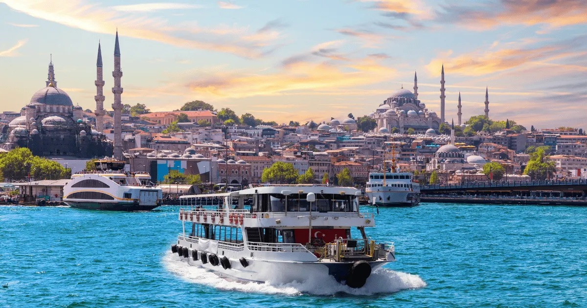
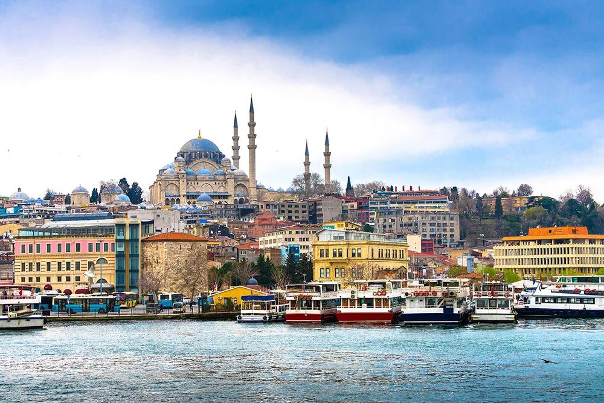

Aşağıdaki popüler turlarımızdan dilediğinizi seçip hemen sepetinize ekleyebilirsiniz.

Eşsiz yalılar ve İstanbul Boğazı manzarası eşliğinde harika bir deneyim.
Fiyat: 300 TL
Turu İncele
Sultanahmet, Ayasofya ve Topkapı Sarayı'nı profesyonel rehberle gezin.
Fiyat: 500 TL
Turu İncele